Chapter 11 KEGG Analysis
last updated: 2023-10-27
Package Install
As usual, make sure we have the right packages for this exercise
if (!require("pacman")) install.packages("pacman"); library(pacman)
# temporary install to fix bug in package
pacman::p_install_version("dbplyr", version = "2.3.4")##
## Version of dbplyr (v. 2.3.4) is suitable# let's load all of the files we were using and want to have again today
p_load("tidyverse", "knitr", "readr",
"pander", "BiocManager",
"dplyr", "stringr", "DOSE",
"purrr", # for working with lists (beautify column names)
"reactable", # for pretty tables.
"BiocFileCache" # for saving downloaded data files
)
# a package from github to install (using pacman library to install)
p_install_gh("noriakis/ggkegg")## Skipping install of 'ggkegg' from a github remote, the SHA1 (0cece6db) has not changed since last install.
## Use `force = TRUE` to force installation##
## The following packages were installed:
## ggkegg# We also need these Bioconductor packages today.
p_load("edgeR",
"AnnotationDbi", "org.Sc.sgd.db",
"pathview","clusterProfiler", "ggupset",
"KEGGgraph", "ggkegg", "patchwork",
"igraph", "tidygraph", "ggfx")11.1 Description
In this class exercise, we will explore the use of KEGG pathways in genomic data analysis. KEGG is a valuable resource for understanding biological pathways and functions associated with genomic data.
11.2 Learning Outcomes
At the end of this exercise, you should be able to:
- Understand the basics of KEGG pathways.
- Learn how to retrieve and analyze pathway information using R.
- Apply KEGG analysis to genomic data.
- Identify paralog differences within KEGG pathways
11.3 Loading in the edgeR DE gene file output.
# Choose topTags destination
dir_output_edgeR <-
path.expand("~/Desktop/Genomic_Data_Analysis/Analysis/edgeR/")
# for this, let's load the res objects as an R data object.
res <- read_rds(file = paste0(dir_output_edgeR, "yeast_res_edgeR.Rds"))
# the below code downloads the file from the internet if you don't have in on your computer
# comment out the above line of code if it gives an error.
if (!exists("res", envir = .GlobalEnv)) {
# If variable doesn't exist, load from
url <- "https://github.com/clstacy/GenomicDataAnalysis_Fa23/raw/main/data/yeast_res_all_edgeR.Rds"
res <- read_rds(url)
# assign("res", data, envir = .GlobalEnv)
cat(paste("Loaded res from", url, "\n"))
rm("url", envir = .GlobalEnv)
} else {
url <- "https://github.com/clstacy/GenomicDataAnalysis_Fa23/raw/main/data/yeast_res_all_edgeR.Rds"
cat(paste("res object is already loaded. Skipping loading from", url, "\n"))
rm("url", envir = .GlobalEnv)
}## res object is already loaded. Skipping loading from https://github.com/clstacy/GenomicDataAnalysis_Fa23/raw/main/data/yeast_res_all_edgeR.Rds11.4 KEGG Analysis
Recall that the res object from the edgeR Differential Expression analysis was defined as glmQLFTest(fit, contrast = my.contrasts[,"EtOHvsWT.MSN24ddvsWT"]). In other words, we are looking at the difference in the ethanol stress response of the Msn2/4∆∆ mutant and the WT cells. Recall that positive log2 fold changes correspond to relatively higher expression of that gene in the Msn2/4∆∆ mutant cells in response stress compared to how WT cells change during stress.
11.4.1 Using kegga() from limma
One approach is to do a simple KEGG enrichment with the limma package, using the function kegga(). This approach is nice, because we can directly load in the res object we created in the edgeR workflow, set our FDR cutoff, and the process happens automatically. See https://www.kegg.jp/kegg/catalog/org_list.html or https://rest.kegg.jp/list/organism for list of organisms available.
# test for overrepresentation of KEGG pathways in given gene list
k <- kegga(res,
species.KEGG = "sce",# three-letter KEGG species identifier.
FDR = 0.01) #FDR cutoff we want in deciding which genes to include.
# we can see the p-value results for both up & down enrichment
k## Pathway N Up Down
## sce00010 Glycolysis / Gluconeogenesis 51 5 11
## sce00020 Citrate cycle (TCA cycle) 30 1 10
## sce00030 Pentose phosphate pathway 27 3 6
## sce00040 Pentose and glucuronate interconversions 10 0 3
## sce00051 Fructose and mannose metabolism 20 0 7
## sce00052 Galactose metabolism 22 0 7
## sce00053 Ascorbate and aldarate metabolism 11 2 4
## sce00061 Fatty acid biosynthesis 13 2 1
## sce00062 Fatty acid elongation 8 1 0
## sce00071 Fatty acid degradation 20 7 5
## sce00100 Steroid biosynthesis 18 6 3
## sce00130 Ubiquinone and other terpenoid-quinone biosynthesis 10 0 5
## sce00190 Oxidative phosphorylation 71 0 27
## sce00220 Arginine biosynthesis 16 3 1
## sce00230 Purine metabolism 57 9 8
## sce00240 Pyrimidine metabolism 31 5 2
## sce00250 Alanine, aspartate and glutamate metabolism 27 5 5
## sce00260 Glycine, serine and threonine metabolism 30 4 5
## sce00261 Monobactam biosynthesis 3 1 0
## sce00270 Cysteine and methionine metabolism 43 12 3
## sce00280 Valine, leucine and isoleucine degradation 14 6 4
## sce00290 Valine, leucine and isoleucine biosynthesis 12 8 0
## sce00300 Lysine biosynthesis 12 6 0
## sce00310 Lysine degradation 16 4 5
## sce00330 Arginine and proline metabolism 23 3 4
## sce00332 Carbapenem biosynthesis 3 1 0
## sce00340 Histidine metabolism 14 2 3
## sce00350 Tyrosine metabolism 13 3 2
## sce00360 Phenylalanine metabolism 7 2 0
## sce00380 Tryptophan metabolism 20 3 6
## sce00400 Phenylalanine, tyrosine and tryptophan biosynthesis 17 3 0
## sce00410 beta-Alanine metabolism 13 3 6
## sce00430 Taurine and hypotaurine metabolism 3 0 3
## sce00440 Phosphonate and phosphinate metabolism 4 1 0
## sce00450 Selenocompound metabolism 12 2 0
## sce00460 Cyanoamino acid metabolism 5 0 1
## sce00470 D-Amino acid metabolism 3 0 1
## sce00480 Glutathione metabolism 23 1 5
## sce00500 Starch and sucrose metabolism 39 1 20
## sce00510 N-Glycan biosynthesis 30 2 1
## sce00511 Other glycan degradation 1 0 1
## sce00513 Various types of N-glycan biosynthesis 31 4 1
## sce00514 Other types of O-glycan biosynthesis 14 2 0
## sce00515 Mannose type O-glycan biosynthesis 7 0 0
## sce00520 Amino sugar and nucleotide sugar metabolism 31 0 7
## sce00561 Glycerolipid metabolism 31 2 13
## sce00562 Inositol phosphate metabolism 21 0 1
## sce00563 Glycosylphosphatidylinositol (GPI)-anchor biosynthesis 25 0 2
## sce00564 Glycerophospholipid metabolism 40 2 10
## sce00565 Ether lipid metabolism 8 0 3
## sce00590 Arachidonic acid metabolism 3 0 2
## sce00592 alpha-Linolenic acid metabolism 4 0 1
## sce00600 Sphingolipid metabolism 14 0 3
## sce00620 Pyruvate metabolism 48 12 12
## sce00630 Glyoxylate and dicarboxylate metabolism 27 4 6
## sce00640 Propanoate metabolism 13 2 1
## sce00650 Butanoate metabolism 9 3 4
## sce00660 C5-Branched dibasic acid metabolism 3 1 0
## sce00670 One carbon pool by folate 15 2 0
## sce00680 Methane metabolism 20 3 3
## sce00730 Thiamine metabolism 16 0 1
## sce00740 Riboflavin metabolism 16 0 1
## sce00750 Vitamin B6 metabolism 11 2 1
## sce00760 Nicotinate and nicotinamide metabolism 20 2 3
## sce00770 Pantothenate and CoA biosynthesis 23 10 4
## sce00780 Biotin metabolism 6 0 0
## sce00785 Lipoic acid metabolism 12 1 2
## sce00790 Folate biosynthesis 11 0 1
## sce00791 Atrazine degradation 2 0 0
## sce00860 Porphyrin metabolism 17 0 2
## sce00900 Terpenoid backbone biosynthesis 19 5 1
## sce00909 Sesquiterpenoid and triterpenoid biosynthesis 2 0 0
## sce00910 Nitrogen metabolism 7 2 1
## sce00920 Sulfur metabolism 15 3 1
## sce00970 Aminoacyl-tRNA biosynthesis 40 4 1
## sce00999 Biosynthesis of various plant secondary metabolites 3 2 0
## sce01040 Biosynthesis of unsaturated fatty acids 10 1 0
## sce01100 Metabolic pathways 766 86 132
## sce01110 Biosynthesis of secondary metabolites 339 56 65
## sce01200 Carbon metabolism 104 10 24
## sce01210 2-Oxocarboxylic acid metabolism 42 13 6
## sce01212 Fatty acid metabolism 23 4 1
## sce01230 Biosynthesis of amino acids 122 32 7
## sce01232 Nucleotide metabolism 42 6 3
## sce01240 Biosynthesis of cofactors 126 18 18
## sce01250 Biosynthesis of nucleotide sugars 22 0 6
## sce02010 ABC transporters 18 1 3
## sce03008 Ribosome biogenesis in eukaryotes 74 32 1
## sce03010 Ribosome 174 61 1
## sce03013 Nucleocytoplasmic transport 65 8 2
## sce03015 mRNA surveillance pathway 48 6 1
## sce03018 RNA degradation 61 6 3
## sce03020 RNA polymerase 31 14 0
## sce03022 Basal transcription factors 32 2 0
## sce03030 DNA replication 31 4 0
## sce03040 Spliceosome 75 4 4
## sce03050 Proteasome 36 0 0
## sce03060 Protein export 22 1 1
## sce03082 ATP-dependent chromatin remodeling 35 3 1
## sce03083 Polycomb repressive complex 13 2 2
## sce03250 Viral life cycle - HIV-1 15 0 1
## sce03410 Base excision repair 25 2 0
## sce03420 Nucleotide excision repair 49 5 0
## sce03430 Mismatch repair 20 1 0
## sce03440 Homologous recombination 21 0 0
## sce03450 Non-homologous end-joining 10 0 0
## sce04011 MAPK signaling pathway - yeast 108 7 12
## sce04070 Phosphatidylinositol signaling system 23 0 1
## sce04111 Cell cycle - yeast 129 12 2
## sce04113 Meiosis - yeast 117 9 15
## sce04120 Ubiquitin mediated proteolysis 50 1 1
## sce04122 Sulfur relay system 7 0 1
## sce04130 SNARE interactions in vesicular transport 20 0 0
## sce04136 Autophagy - other 23 0 1
## sce04138 Autophagy - yeast 90 2 8
## sce04139 Mitophagy - yeast 40 1 3
## sce04141 Protein processing in endoplasmic reticulum 92 1 17
## sce04144 Endocytosis 79 1 11
## sce04145 Phagosome 35 0 0
## sce04146 Peroxisome 39 2 8
## sce04148 Efferocytosis 24 0 4
## sce04213 Longevity regulating pathway - multiple species 38 1 17
## sce04392 Hippo signaling pathway - multiple species 8 2 0
## sce04814 Motor proteins 24 2 1
## P.Up P.Down
## sce00010 4.59e-01 1.13e-02
## sce00020 9.35e-01 4.71e-04
## sce00030 4.21e-01 4.86e-02
## sce00040 1.00e+00 7.17e-02
## sce00051 1.00e+00 2.47e-03
## sce00052 1.00e+00 4.55e-03
## sce00053 2.47e-01 1.90e-02
## sce00061 3.14e-01 7.50e-01
## sce00062 5.17e-01 1.00e+00
## sce00071 1.02e-03 4.45e-02
## sce00100 3.13e-03 2.71e-01
## sce00130 1.00e+00 1.69e-03
## sce00190 1.00e+00 2.93e-10
## sce00220 1.57e-01 8.18e-01
## sce00230 5.55e-02 2.13e-01
## sce00240 1.27e-01 8.35e-01
## sce00250 7.96e-02 1.30e-01
## sce00260 2.61e-01 1.80e-01
## sce00261 2.39e-01 1.00e+00
## sce00270 2.03e-04 8.24e-01
## sce00280 6.85e-04 4.53e-02
## sce00290 1.11e-06 1.00e+00
## sce00300 2.45e-04 1.00e+00
## sce00310 4.42e-02 1.75e-02
## sce00330 3.23e-01 1.97e-01
## sce00332 2.39e-01 1.00e+00
## sce00340 3.47e-01 1.62e-01
## sce00350 9.69e-02 3.84e-01
## sce00360 1.18e-01 1.00e+00
## sce00380 2.49e-01 1.16e-02
## sce00400 1.79e-01 1.00e+00
## sce00410 9.69e-02 9.52e-04
## sce00430 1.00e+00 1.02e-03
## sce00440 3.05e-01 1.00e+00
## sce00450 2.80e-01 1.00e+00
## sce00460 1.00e+00 4.13e-01
## sce00470 1.00e+00 2.73e-01
## sce00480 8.77e-01 7.52e-02
## sce00500 9.72e-01 9.65e-11
## sce00510 7.49e-01 9.59e-01
## sce00511 1.00e+00 1.01e-01
## sce00513 2.81e-01 9.63e-01
## sce00514 3.47e-01 1.00e+00
## sce00515 1.00e+00 1.00e+00
## sce00520 1.00e+00 3.16e-02
## sce00561 7.65e-01 3.67e-06
## sce00562 1.00e+00 8.94e-01
## sce00563 1.00e+00 7.35e-01
## sce00564 8.74e-01 5.25e-03
## sce00565 1.00e+00 3.90e-02
## sce00590 1.00e+00 2.85e-02
## sce00592 1.00e+00 3.47e-01
## sce00600 1.00e+00 1.62e-01
## sce00620 6.17e-04 2.31e-03
## sce00630 2.03e-01 4.86e-02
## sce00640 3.14e-01 7.50e-01
## sce00650 3.69e-02 8.57e-03
## sce00660 2.39e-01 1.00e+00
## sce00670 3.79e-01 1.00e+00
## sce00680 2.49e-01 3.29e-01
## sce00730 1.00e+00 8.18e-01
## sce00740 1.00e+00 8.18e-01
## sce00750 2.47e-01 6.90e-01
## sce00760 5.29e-01 3.29e-01
## sce00770 9.09e-06 1.97e-01
## sce00780 1.00e+00 1.00e+00
## sce00785 6.65e-01 3.46e-01
## sce00790 1.00e+00 6.90e-01
## sce00791 1.00e+00 1.00e+00
## sce00860 1.00e+00 5.24e-01
## sce00900 2.03e-02 8.68e-01
## sce00909 1.00e+00 1.00e+00
## sce00910 1.18e-01 5.26e-01
## sce00920 1.36e-01 7.98e-01
## sce00970 4.63e-01 9.86e-01
## sce00999 2.13e-02 1.00e+00
## sce01040 5.97e-01 1.00e+00
## sce01100 5.52e-03 3.24e-11
## sce01110 1.16e-06 1.37e-07
## sce01200 4.18e-01 7.56e-05
## sce01210 3.33e-05 2.46e-01
## sce01212 1.34e-01 9.14e-01
## sce01230 6.35e-09 9.70e-01
## sce01232 1.53e-01 8.11e-01
## sce01240 2.36e-02 8.12e-02
## sce01250 1.00e+00 1.88e-02
## sce02010 8.06e-01 2.71e-01
## sce03008 1.21e-15 1.00e+00
## sce03010 3.84e-23 1.00e+00
## sce03013 2.00e-01 9.92e-01
## sce03015 2.35e-01 9.94e-01
## sce03018 4.39e-01 9.54e-01
## sce03020 7.75e-08 1.00e+00
## sce03022 7.80e-01 1.00e+00
## sce03030 2.81e-01 1.00e+00
## sce03040 9.02e-01 9.53e-01
## sce03050 1.00e+00 1.00e+00
## sce03060 8.65e-01 9.04e-01
## sce03082 5.97e-01 9.76e-01
## sce03083 3.14e-01 3.84e-01
## sce03250 1.00e+00 7.98e-01
## sce03410 6.53e-01 1.00e+00
## sce03420 4.24e-01 1.00e+00
## sce03430 8.38e-01 1.00e+00
## sce03440 1.00e+00 1.00e+00
## sce03450 1.00e+00 1.00e+00
## sce04011 8.41e-01 4.09e-01
## sce04070 1.00e+00 9.14e-01
## sce04111 4.47e-01 1.00e+00
## sce04113 6.99e-01 1.99e-01
## sce04120 9.90e-01 9.95e-01
## sce04122 1.00e+00 5.26e-01
## sce04130 1.00e+00 1.00e+00
## sce04136 1.00e+00 9.14e-01
## sce04138 9.97e-01 7.01e-01
## sce04139 9.74e-01 7.84e-01
## sce04141 1.00e+00 9.67e-03
## sce04144 9.99e-01 1.69e-01
## sce04145 1.00e+00 1.00e+00
## sce04146 8.65e-01 3.79e-02
## sce04148 1.00e+00 2.19e-01
## sce04213 9.69e-01 3.55e-08
## sce04392 1.49e-01 1.00e+00
## sce04814 6.30e-01 9.23e-01Interesting, but note those are in order of the pathway ID, which are the left-most rowname values above.
If we want to sort the rows based on their significance, we can use the topKEGG function to do so, like this:
## Pathway N Up Down
## sce01100 Metabolic pathways 766 86 132
## sce00500 Starch and sucrose metabolism 39 1 20
## sce00190 Oxidative phosphorylation 71 0 27
## sce04213 Longevity regulating pathway - multiple species 38 1 17
## sce01110 Biosynthesis of secondary metabolites 339 56 65
## sce00561 Glycerolipid metabolism 31 2 13
## sce01200 Carbon metabolism 104 10 24
## sce00020 Citrate cycle (TCA cycle) 30 1 10
## sce00410 beta-Alanine metabolism 13 3 6
## sce00430 Taurine and hypotaurine metabolism 3 0 3
## sce00130 Ubiquinone and other terpenoid-quinone biosynthesis 10 0 5
## sce00620 Pyruvate metabolism 48 12 12
## sce00051 Fructose and mannose metabolism 20 0 7
## sce00052 Galactose metabolism 22 0 7
## sce00564 Glycerophospholipid metabolism 40 2 10
## sce00650 Butanoate metabolism 9 3 4
## sce04141 Protein processing in endoplasmic reticulum 92 1 17
## sce00010 Glycolysis / Gluconeogenesis 51 5 11
## sce00380 Tryptophan metabolism 20 3 6
## sce00310 Lysine degradation 16 4 5
## P.Up P.Down
## sce01100 5.52e-03 3.24e-11
## sce00500 9.72e-01 9.65e-11
## sce00190 1.00e+00 2.93e-10
## sce04213 9.69e-01 3.55e-08
## sce01110 1.16e-06 1.37e-07
## sce00561 7.65e-01 3.67e-06
## sce01200 4.18e-01 7.56e-05
## sce00020 9.35e-01 4.71e-04
## sce00410 9.69e-02 9.52e-04
## sce00430 1.00e+00 1.02e-03
## sce00130 1.00e+00 1.69e-03
## sce00620 6.17e-04 2.31e-03
## sce00051 1.00e+00 2.47e-03
## sce00052 1.00e+00 4.55e-03
## sce00564 8.74e-01 5.25e-03
## sce00650 3.69e-02 8.57e-03
## sce04141 1.00e+00 9.67e-03
## sce00010 4.59e-01 1.13e-02
## sce00380 2.49e-01 1.16e-02
## sce00310 4.42e-02 1.75e-02Notice I chose to sort on p-value for the “downregulated” genes (aka lower in the mutant). We could change “down” to “up” in the code above to sort on the other column.
11.4.2 Pathway Visualization
So, we’ve found out which KEGG pathways are enriched in our gene list for this comparison. A common thing we will want to do is visualize those enriched pathways. The Bioconductor package pathview allows us to visualize these pathways. If you prefer web based tools, it has a free web version at: https://pathview.uncc.edu
In addition to just the genes that are DE, we can also include information about their changes by coloring the corresponding parts of the graph accordingly.
# this makes sure you have pathview and tries to install it if you don't
if (!requireNamespace("pathview", quietly = TRUE))
BiocManager::install("pathview")
library("pathview")
# save the logFC values from the res object to a new variable
gene_data_logFC <- res$table %>% dplyr::select(logFC)
# put the ORF names as names for each entry
fold_change_geneList <- setNames(object = data.frame(res)$logFC,
nm = data.frame(res)$ORF)
# we can see what this look like with head()
head(fold_change_geneList)## YIL170W YFL056C YAR061W YGR014W YPR031W YIL003W
## 1.00593 0.82290 -0.63346 -0.00538 -0.10371 0.25097# the pathview command saves the file to your current directory.
# let's create a place for that information to go.
path_to_kegg_images <- "~/Desktop/Genomic_Data_Analysis/Analysis/KEGG/"
if (!dir.exists(path_to_kegg_images)) {
dir.create(path_to_kegg_images, recursive = TRUE)
}
# move to this place so images save there.
setwd(path_to_kegg_images)
# now, we can run the pathview command.
# you can try changing the pathway.id below to one of the shown examples
# this will let you see the different pathways.
test <- pathview(gene.data = fold_change_geneList,
# pathway.id = "sce01100", #metabolic pathways
pathway.id = "sce00010", #glycolysis/gluconeogenesis
# pathway.id = "sce03050", # proteasome cycle
# pathway.id = "sce00020", # TCA cycle
# pathway.id = "sce00500", # starch & sucrose metabolism (trehalose)
# pathway.id = "sce00030", #PPP
species = "sce",
gene.idtype="orf",
# expand.node = TRUE,
split.group=T,
map.symbol = T,
is.signal=F,
kegg.native = F,
match.data = T,
node.sum='max.abs', # this determines how to choose which gene to show.
multi.state = T,
bins=20,
same.layer = F,
pdf.size=c(7,7),
limit = list(gene=5, cpd=1))## 'select()' returned 1:1 mapping between keys and columns## [1] "Note: 148 of 5615 unique input IDs unmapped."## Info: Getting gene ID data from KEGG...## Info: Done with data retrieval!## Warning in .local(from, to, graph): edges replaced: '139|61', '139|62',
## '118|121'## Info: Working in directory /Users/clstacy/Desktop/Genomic_Data_Analysis/Analysis/KEGG## Info: Writing image file sce00010.pathview.pdfOf course, you might want more control over the process. In that case, we can use another package. For example, we could use clusterProfiler that we’ve used before. If you want to learn more, this is a useful guide: https://yulab-smu.top/biomedical-knowledge-mining-book/clusterprofiler-kegg.html. In this analysis, we need to manually select the genes that we want to run KEGG enrichment on, and save that character vector of gene names.
# turn res object into a list of genes
# Recall that these genes are those that are DE between mutant stress response and
# the WT stress response.
DE_genes <- res %>%
data.frame() %>%
filter(PValue < 0.01 & abs(logFC)>0.5
) %>%
pull(ORF)To run the enrichment, we can use the enrichKEGG() function from the clusterProfiler package. The argument “gene” for this function requires a vector of Entrez gene id’s. Right now we have a vector of gene IDs, but they are the ORF names instead of entrez IDs, so for most organisms we need to convert them.
# how can we find our organism & its code? try this clusterProfiler command:
search_kegg_organism('yeast', by='common_name')## kegg_code scientific_name common_name
## 708 sce Saccharomyces cerevisiae budding yeast
## 820 spo Schizosaccharomyces pombe fission yeastThankfully, the clusterProfiler package comes with the function bitr (Biological Id TRanslator) to translate geneIDs.
Note: the sce genome database is coded differently than many genome databases, so it requests the ORF instead of the entrezID, so we can directly use the DE_genes vector instead of the entrez ID. If you don’t work with yeast, you’ll probably need to use the entrez ID list for analyses that you do on your own.
# convert gene IDs to entrez IDs
entrez_ids <- bitr(DE_genes, fromType = "ORF", toType = "ENTREZID", OrgDb = org.Sc.sgd.db)## 'select()' returned 1:1 mapping between keys and columns# Run our KEGG enrichment
kegg_results <- enrichKEGG(gene = DE_genes, #entrez_ids$ENTREZID,
organism = 'sce' #options: https://www.genome.jp/kegg/catalog/org_list.html
)## Reading KEGG annotation online: "https://rest.kegg.jp/link/sce/pathway"...## Reading KEGG annotation online: "https://rest.kegg.jp/list/pathway/sce"...## category subcategory ID
## sce01110 Metabolism Global and overview maps sce01110
## sce00500 Metabolism Carbohydrate metabolism sce00500
## sce04213 Organismal Systems Aging sce04213
## sce00620 Metabolism Carbohydrate metabolism sce00620
## sce01200 Metabolism Global and overview maps sce01200
## sce00770 Metabolism Metabolism of cofactors and vitamins sce00770
## Description
## sce01110 Biosynthesis of secondary metabolites - Saccharomyces cerevisiae (budding yeast)
## sce00500 Starch and sucrose metabolism - Saccharomyces cerevisiae (budding yeast)
## sce04213 Longevity regulating pathway - multiple species - Saccharomyces cerevisiae (budding yeast)
## sce00620 Pyruvate metabolism - Saccharomyces cerevisiae (budding yeast)
## sce01200 Carbon metabolism - Saccharomyces cerevisiae (budding yeast)
## sce00770 Pantothenate and CoA biosynthesis - Saccharomyces cerevisiae (budding yeast)
## GeneRatio BgRatio pvalue p.adjust qvalue
## sce01110 108/385 351/2467 4.483267e-15 4.259103e-13 3.114691e-13
## sce00500 20/385 41/2467 5.180046e-07 1.960553e-05 1.433756e-05
## sce04213 19/385 38/2467 6.191220e-07 1.960553e-05 1.433756e-05
## sce00620 22/385 52/2467 2.906810e-06 6.903673e-05 5.048669e-05
## sce01200 36/385 112/2467 5.890900e-06 1.092427e-04 7.988940e-05
## sce00770 13/385 23/2467 6.899539e-06 1.092427e-04 7.988940e-05
## geneID
## sce01110 YPL028W/YER091C/YKR067W/YMR169C/YDR178W/YER026C/YKL085W/YGR088W/YNL274C/YIL145C/YJR148W/YBL011W/YJR016C/YHR137W/YLR355C/YBR052C/YPL061W/YFR015C/YML110C/YER073W/YGR155W/YGR060W/YOR347C/YOR374W/YMR108W/YOR108W/YDR256C/YLR258W/YLL041C/YLR432W/YKL035W/YDR074W/YOR176W/YDR300C/YBR001C/YJL200C/YNR001C/YHR063C/YLR372W/YLL062C/YOR184W/YMR105C/YER141W/YAL054C/YKL067W/YPR145W/YIL094C/YCR073W-A/YLR303W/YLR174W/YGR248W/YAL061W/YDR502C/YPR184W/YDL131W/YJR010W/YMR189W/YIL155C/YDR032C/YNR043W/YCR004C/YIL125W/YDR019C/YPR160W/YBR117C/YML126C/YDR001C/YEL011W/YJL052W/YGR255C/YNL280C/YGL009C/YDL166C/YML035C/YDL022W/YDR516C/YMR261C/YKL148C/YHR208W/YAL060W/YNR034W/YGR157W/YBR126C/YEL046C/YBR145W/YER081W/YLR180W/YMR278W/YML100W/YLR153C/YDL182W/YMR250W/YBL068W/YJR073C/YOL058W/YPR026W/YFL030W/YGL256W/YDR148C/YGR205W/YKL141W/YKR058W/YGR256W/YFR053C/YDR234W/YDL021W/YOR136W/YCL040W
## sce00500 YFR015C/YLR258W/YKL035W/YDR074W/YBR001C/YMR105C/YGR287C/YPR184W/YPR160W/YDR001C/YEL011W/YDR516C/YMR261C/YBR126C/YMR278W/YML100W/YPR026W/YKR058W/YFR053C/YCL040W
## sce04213 YGR088W/YPL203W/YJL164C/YHR008C/YDR256C/YLL024C/YER103W/YDR258C/YFL033C/YPL015C/YLL026W/YDR096W/YBL075C/YOR025W/YAL005C/YGL037C/YNL098C/YJL005W/YJR104C
## sce00620 YPL028W/YMR169C/YKL085W/YPL061W/YER073W/YOR347C/YOR374W/YOR108W/YGL062W/YML004C/YAL054C/YDL174C/YDL131W/YDR272W/YBR145W/YEL071W/YLR153C/YDL182W/YBL015W/YML054C/YGL256W/YDR533C
## sce01200 YPL028W/YDR178W/YKL085W/YGR088W/YML070W/YOR347C/YDR256C/YLL041C/YGL062W/YNR001C/YOR184W/YAL054C/YCR073W-A/YLR303W/YLR174W/YGR248W/YMR189W/YIL125W/YDR019C/YBR117C/YJL052W/YDR516C/YKL148C/YNR034W/YER081W/YLR153C/YBL068W/YFL030W/YDR148C/YGR205W/YKL141W/YGR256W/YFR053C/YDL021W/YOR136W/YCL040W
## sce00770 YMR169C/YIL145C/YJR148W/YJR016C/YLR355C/YPL061W/YER073W/YOR374W/YMR108W/YHR063C/YGL154C/YHR208W/YMR020W
## Count
## sce01110 108
## sce00500 20
## sce04213 19
## sce00620 22
## sce01200 36
## sce00770 13# Remove " - Saccharomyces cerevesiae" from each description entry
kegg_results@result$Description <- kegg_results@result$Description %>% print() %>% str_replace_all(., fixed(" - Saccharomyces cerevisiae"), "")## [1] "Biosynthesis of secondary metabolites - Saccharomyces cerevisiae (budding yeast)"
## [2] "Starch and sucrose metabolism - Saccharomyces cerevisiae (budding yeast)"
## [3] "Longevity regulating pathway - multiple species - Saccharomyces cerevisiae (budding yeast)"
## [4] "Pyruvate metabolism - Saccharomyces cerevisiae (budding yeast)"
## [5] "Carbon metabolism - Saccharomyces cerevisiae (budding yeast)"
## [6] "Pantothenate and CoA biosynthesis - Saccharomyces cerevisiae (budding yeast)"
## [7] "2-Oxocarboxylic acid metabolism - Saccharomyces cerevisiae (budding yeast)"
## [8] "Ribosome biogenesis in eukaryotes - Saccharomyces cerevisiae (budding yeast)"
## [9] "Valine, leucine and isoleucine degradation - Saccharomyces cerevisiae (budding yeast)"
## [10] "Glyoxylate and dicarboxylate metabolism - Saccharomyces cerevisiae (budding yeast)"
## [11] "beta-Alanine metabolism - Saccharomyces cerevisiae (budding yeast)"
## [12] "Valine, leucine and isoleucine biosynthesis - Saccharomyces cerevisiae (budding yeast)"
## [13] "Biosynthesis of amino acids - Saccharomyces cerevisiae (budding yeast)"
## [14] "RNA polymerase - Saccharomyces cerevisiae (budding yeast)"
## [15] "Ribosome - Saccharomyces cerevisiae (budding yeast)"
## [16] "Tryptophan metabolism - Saccharomyces cerevisiae (budding yeast)"
## [17] "Glycerolipid metabolism - Saccharomyces cerevisiae (budding yeast)"
## [18] "Biosynthesis of cofactors - Saccharomyces cerevisiae (budding yeast)"
## [19] "Glycine, serine and threonine metabolism - Saccharomyces cerevisiae (budding yeast)"
## [20] "Citrate cycle (TCA cycle) - Saccharomyces cerevisiae (budding yeast)"
## [21] "Lysine degradation - Saccharomyces cerevisiae (budding yeast)"
## [22] "Fatty acid degradation - Saccharomyces cerevisiae (budding yeast)"
## [23] "Oxidative phosphorylation - Saccharomyces cerevisiae (budding yeast)"
## [24] "Glycolysis / Gluconeogenesis - Saccharomyces cerevisiae (budding yeast)"
## [25] "Cysteine and methionine metabolism - Saccharomyces cerevisiae (budding yeast)"
## [26] "Ubiquinone and other terpenoid-quinone biosynthesis - Saccharomyces cerevisiae (budding yeast)"
## [27] "Ascorbate and aldarate metabolism - Saccharomyces cerevisiae (budding yeast)"
## [28] "Purine metabolism - Saccharomyces cerevisiae (budding yeast)"
## [29] "Lysine biosynthesis - Saccharomyces cerevisiae (budding yeast)"
## [30] "Alanine, aspartate and glutamate metabolism - Saccharomyces cerevisiae (budding yeast)"
## [31] "Fructose and mannose metabolism - Saccharomyces cerevisiae (budding yeast)"
## [32] "Pentose phosphate pathway - Saccharomyces cerevisiae (budding yeast)"
## [33] "Galactose metabolism - Saccharomyces cerevisiae (budding yeast)"
## [34] "Methane metabolism - Saccharomyces cerevisiae (budding yeast)"
## [35] "Lipoic acid metabolism - Saccharomyces cerevisiae (budding yeast)"
## [36] "Tyrosine metabolism - Saccharomyces cerevisiae (budding yeast)"
## [37] "Propanoate metabolism - Saccharomyces cerevisiae (budding yeast)"
## [38] "Arginine and proline metabolism - Saccharomyces cerevisiae (budding yeast)"
## [39] "Biosynthesis of nucleotide sugars - Saccharomyces cerevisiae (budding yeast)"
## [40] "Glycerophospholipid metabolism - Saccharomyces cerevisiae (budding yeast)"
## [41] "Peroxisome - Saccharomyces cerevisiae (budding yeast)"
## [42] "Histidine metabolism - Saccharomyces cerevisiae (budding yeast)"
## [43] "Nicotinate and nicotinamide metabolism - Saccharomyces cerevisiae (budding yeast)"
## [44] "Sulfur metabolism - Saccharomyces cerevisiae (budding yeast)"
## [45] "Nucleotide metabolism - Saccharomyces cerevisiae (budding yeast)"
## [46] "Arginine biosynthesis - Saccharomyces cerevisiae (budding yeast)"
## [47] "Amino sugar and nucleotide sugar metabolism - Saccharomyces cerevisiae (budding yeast)"
## [48] "Glutathione metabolism - Saccharomyces cerevisiae (budding yeast)"
## [49] "Fatty acid metabolism - Saccharomyces cerevisiae (budding yeast)"
## [50] "Pentose and glucuronate interconversions - Saccharomyces cerevisiae (budding yeast)"
## [51] "Fatty acid biosynthesis - Saccharomyces cerevisiae (budding yeast)"
## [52] "Vitamin B6 metabolism - Saccharomyces cerevisiae (budding yeast)"
## [53] "Polycomb repressive complex - Saccharomyces cerevisiae (budding yeast)"
## [54] "Pyrimidine metabolism - Saccharomyces cerevisiae (budding yeast)"
## [55] "Meiosis - yeast - Saccharomyces cerevisiae (budding yeast)"
## [56] "MAPK signaling pathway - yeast - Saccharomyces cerevisiae (budding yeast)"
## [57] "Steroid biosynthesis - Saccharomyces cerevisiae (budding yeast)"
## [58] "ABC transporters - Saccharomyces cerevisiae (budding yeast)"
## [59] "Efferocytosis - Saccharomyces cerevisiae (budding yeast)"
## [60] "Selenocompound metabolism - Saccharomyces cerevisiae (budding yeast)"
## [61] "Terpenoid backbone biosynthesis - Saccharomyces cerevisiae (budding yeast)"
## [62] "Other types of O-glycan biosynthesis - Saccharomyces cerevisiae (budding yeast)"
## [63] "Sphingolipid metabolism - Saccharomyces cerevisiae (budding yeast)"
## [64] "Protein processing in endoplasmic reticulum - Saccharomyces cerevisiae (budding yeast)"
## [65] "One carbon pool by folate - Saccharomyces cerevisiae (budding yeast)"
## [66] "Porphyrin metabolism - Saccharomyces cerevisiae (budding yeast)"
## [67] "RNA degradation - Saccharomyces cerevisiae (budding yeast)"
## [68] "Endocytosis - Saccharomyces cerevisiae (budding yeast)"
## [69] "Biosynthesis of unsaturated fatty acids - Saccharomyces cerevisiae (budding yeast)"
## [70] "Folate biosynthesis - Saccharomyces cerevisiae (budding yeast)"
## [71] "Various types of N-glycan biosynthesis - Saccharomyces cerevisiae (budding yeast)"
## [72] "DNA replication - Saccharomyces cerevisiae (budding yeast)"
## [73] "Mitophagy - yeast - Saccharomyces cerevisiae (budding yeast)"
## [74] "Autophagy - other - Saccharomyces cerevisiae (budding yeast)"
## [75] "Motor proteins - Saccharomyces cerevisiae (budding yeast)"
## [76] "Glycosylphosphatidylinositol (GPI)-anchor biosynthesis - Saccharomyces cerevisiae (budding yeast)"
## [77] "Viral life cycle - HIV-1 - Saccharomyces cerevisiae (budding yeast)"
## [78] "Cell cycle - yeast - Saccharomyces cerevisiae (budding yeast)"
## [79] "Riboflavin metabolism - Saccharomyces cerevisiae (budding yeast)"
## [80] "Phenylalanine, tyrosine and tryptophan biosynthesis - Saccharomyces cerevisiae (budding yeast)"
## [81] "Thiamine metabolism - Saccharomyces cerevisiae (budding yeast)"
## [82] "Nucleocytoplasmic transport - Saccharomyces cerevisiae (budding yeast)"
## [83] "Autophagy - yeast - Saccharomyces cerevisiae (budding yeast)"
## [84] "N-Glycan biosynthesis - Saccharomyces cerevisiae (budding yeast)"
## [85] "Spliceosome - Saccharomyces cerevisiae (budding yeast)"
## [86] "Inositol phosphate metabolism - Saccharomyces cerevisiae (budding yeast)"
## [87] "Homologous recombination - Saccharomyces cerevisiae (budding yeast)"
## [88] "Phosphatidylinositol signaling system - Saccharomyces cerevisiae (budding yeast)"
## [89] "Base excision repair - Saccharomyces cerevisiae (budding yeast)"
## [90] "Basal transcription factors - Saccharomyces cerevisiae (budding yeast)"
## [91] "mRNA surveillance pathway - Saccharomyces cerevisiae (budding yeast)"
## [92] "ATP-dependent chromatin remodeling - Saccharomyces cerevisiae (budding yeast)"
## [93] "Nucleotide excision repair - Saccharomyces cerevisiae (budding yeast)"
## [94] "Ubiquitin mediated proteolysis - Saccharomyces cerevisiae (budding yeast)"
## [95] "Aminoacyl-tRNA biosynthesis - Saccharomyces cerevisiae (budding yeast)"11.5 Visualize on the KEGG website
The first way we might want to visualize this plot is part of a KEGG pathway. We can open an html window with genes that are enriched highlighted, like this. Run one of these lines below and it will open a new window in your browser.
11.6 Comparing Paralogs in common pathways
Using the res_all object instead, we can compare logFC across contrasts.
We can create a side by side of the WT EtOH response and the Msn2/4∆∆ EtOH response.
# choose the pathway we want to visualize:
pathway_to_graph <- "sce00010" # glycolysis/gluconeogenesis
# pathway_to_graph <- "sce00020" # TCA cycle
# pathway_to_graph <- "sce04213" # longevity
# pathway_to_graph <- "sce00500" # starch & sucrose metabolism
# pathway_to_graph <- "sce00620" # pyruvate metabolism
# get the ID for the pathway we want to see
pathway_number <- kegg_results %>%
data.frame() %>%
mutate(row_number = row_number()) %>%
filter(ID == pathway_to_graph) %>%
pull(row_number)
# this saves the kegg list reaction mappings to KEGG_reactions for plotting
# where these came from: "https://rest.kegg.jp/list/reaction/"
if (!exists("KEGG_reactions")) {
# save the kegglist reaction infromation
KEGG_reactions <- KEGGREST::keggList("reaction") %>%
as.data.frame()
colnames(KEGG_reactions) <- "long_reaction_description"
KEGG_reactions <- KEGG_reactions %>%
tibble::rownames_to_column("reaction") %>%
dplyr::mutate(reaction_description = str_split_i(
long_reaction_description, ";", 1)
) %>%
dplyr::select(reaction, reaction_description) %>%
dplyr::mutate(reaction = paste0('rn:', reaction))
}
# save the kegg_data as a ggkegg object
KEGG_data <- kegg_results %>%
ggkegg(
convert_first = FALSE,
convert_collapse = "\n",
pathway_number = pathway_number, # changing this to change the pathway.
convert_org = c("sce"),
delete_zero_degree = TRUE,
return_igraph = FALSE
)
# process thsi data to visualize
graph.data <- KEGG_data$data %>%
filter(type == "gene") %>%
mutate(showname = strsplit(name, " ") %>% str_remove_all("sce:")) %>%
mutate(showname = gsub('c\\(|\\)|"|"|,', '', showname)) %>%
separate_rows(showname, sep = " ") %>%
left_join(rownames_to_column(res_all$table),
by = c("showname" = "rowname")) %>%
left_join(KEGG_reactions, by = "reaction") %>%
mutate(gene_name = AnnotationDbi::select(org.Sc.sgd.db,
keys = showname,
columns = "GENENAME")$GENENAME) %>%
mutate(gene_name = coalesce(gene_name, showname))## 'select()' returned many:1 mapping between keys and columns# find our fc values needed for color scale
max_fc <-
ceiling(max(c(
abs(graph.data$logFC.EtOHvsMOCK.MSN24dd),
abs(graph.data$logFC.EtOHvsMOCK.WT)
), na.rm = TRUE))
# create graph for WT stress response
WT.graph <- graph.data %>%
ggplot(aes(x = x, y = y)) +
overlay_raw_map(pathway_to_graph) +
ggrepel::geom_label_repel(
aes(label = gene_name, fill = logFC.EtOHvsMOCK.WT),
box.padding = 0.05,
label.padding = 0.05,
direction = "y",
size = 2,
max.overlaps = 100,
label.r = 0.002,
seed = 123
) +
theme_void() +
scale_fill_gradientn(
colours = rev(RColorBrewer::brewer.pal(n = 10, name = "RdYlBu")),
limits = c(-max_fc, max_fc)
) +
theme(plot.margin = unit(c(0, 0, 0, 0), "cm")) +
labs(fill = "logFC", title = " WT Response to Ethanol")
# create graph for mutant stress response
msn24.graph <- graph.data %>%
ggplot(aes(x = x, y = y)) +
overlay_raw_map(pathway_to_graph) +
ggrepel::geom_label_repel(
aes(label = gene_name, fill = logFC.EtOHvsMOCK.MSN24dd),
box.padding = 0.05,
label.padding = 0.05,
direction = "y",
size = 2,
max.overlaps = 100,
label.r = 0.002,
seed = 123
) +
theme_void() +
guides(fill = FALSE) +
scale_fill_gradientn(
colours = rev(RColorBrewer::brewer.pal(n = 10, name = "RdYlBu")),
limits = c(-max_fc, max_fc)
) +
theme(plot.margin = unit(c(0, 0, 0, 0), "cm")) +
labs(fill = "logFC", title = " Msn2/4∆∆ Response to Ethanol")
# generate the graph
side_by_side_graph <- WT.graph + msn24.graph +
patchwork::plot_annotation(tag_levels = 'A')
# display the graph
side_by_side_graph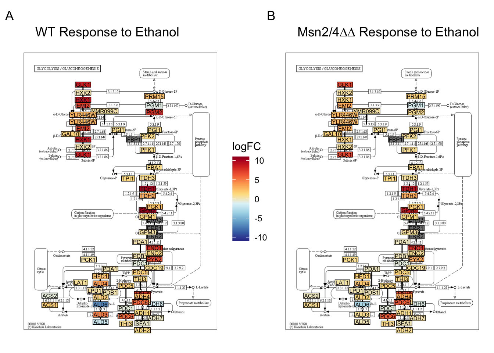
Once we are happy with our graph. We might want to save it. We can save it like this
11.8 Dotplot
We can create a dotplot from this object as shown below. The dotplot shows KEGG categories that are enriched, the adjusted p.values, the number of genes in the KEGG category, and the proportion of genes in the KEGG pathway that are included in the DE gene list.
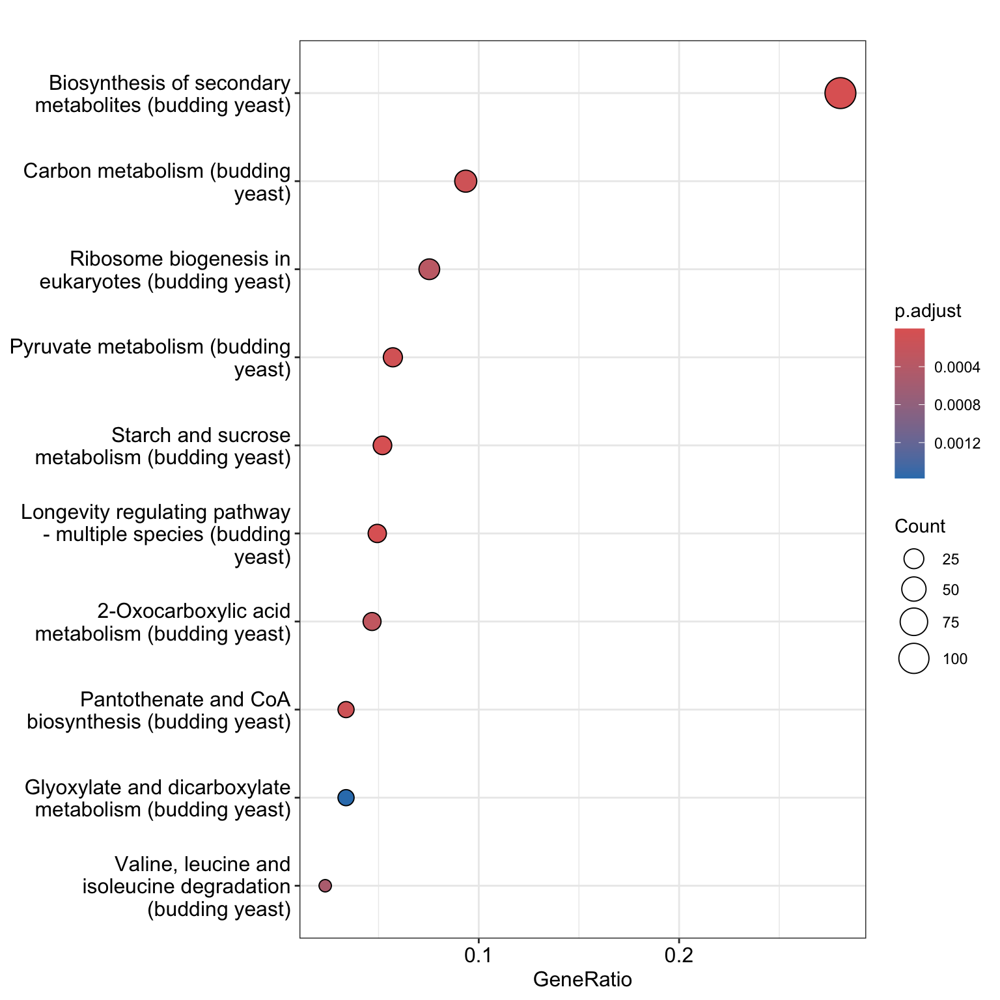
11.9 cnetplot
The dotplot() only shows the most significant or selected enriched terms, while we may want to know which genes are involved in these significant terms. In order to consider the potentially biological complexities in which a gene may belong to multiple annotation categories and provide log2FC information, we can use the cnetplot() function to extract the complex association. The cnetplot() depicts the linkages of genes and KEGG pathways as a network. We can project the network into 2D space, or we can create a circular version of the graph. See each below.
# cnetplot
cnetplot(kegg_results,
showCategory=10,
node_label="category",
color.params=list(foldChange = fold_change_geneList),
cex.params=list(gene_label = 0.1,
category_label=0.5),
max.overlaps=100) +
# change the color scale
scale_colour_gradientn(colours = rev(RColorBrewer::brewer.pal(n = 10, name = "RdYlBu")), limits=c(-6, 6)) +
labs(colour="logFC")## Scale for size is already present.
## Adding another scale for size, which will replace the existing scale.
## Scale for colour is already present.
## Adding another scale for colour, which will replace the existing scale.## Warning: Removed 167 rows containing missing values (`geom_text_repel()`).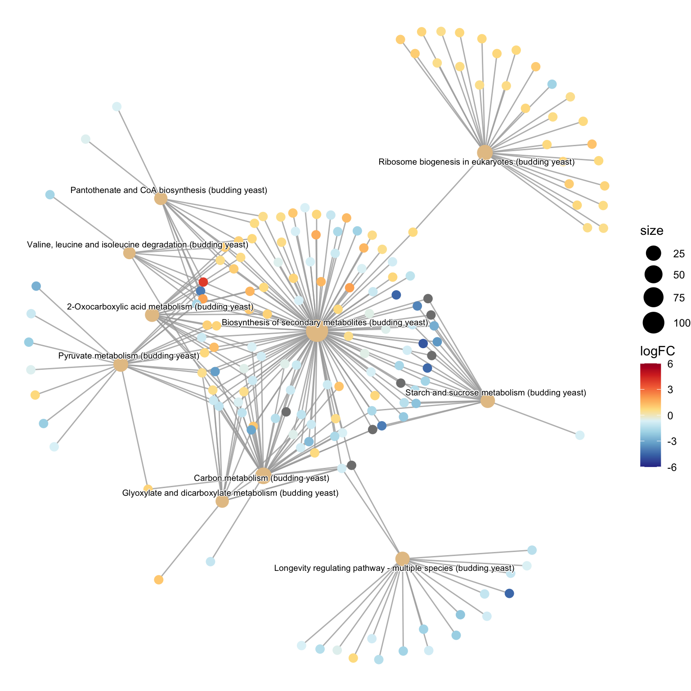
# circular cnetplot
cnetplot(kegg_results,
showCategory=6,
circular=TRUE, # this changes the output graphing
node_label="category",
color.params=list(foldChange = fold_change_geneList),
cex.params=list(gene_label = 0.5,
category_label=0.5),
max.overlaps=100) +
# change the color scale
scale_colour_gradientn(colours = rev(RColorBrewer::brewer.pal(n = 10, name = "RdYlBu")), limits=c(-6, 6)) +
labs(colour="logFC")## Scale for size is already present.
## Adding another scale for size, which will replace the existing scale.
## Scale for colour is already present.
## Adding another scale for colour, which will replace the existing scale.## Warning: Removed 137 rows containing missing values (`geom_text_repel()`).## Warning: ggrepel: 4 unlabeled data points (too many overlaps). Consider
## increasing max.overlaps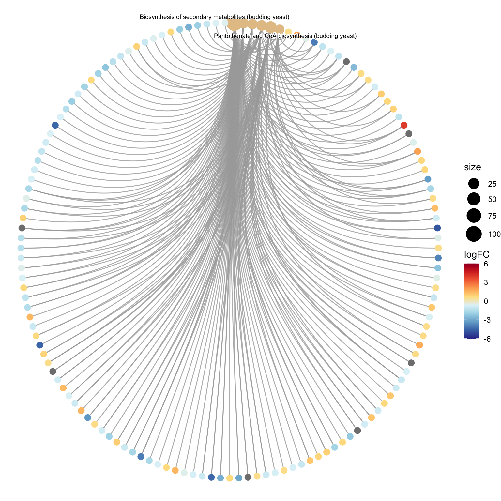
11.10 heatplot
The heatplot is similar to cnetplot, while displaying the relationships as a heatmap. The gene-concept network may become too complicated if you want to show a large number significant terms. The heatplot can simplify the result and more easy to identify expression patterns.
# heatplot
heatplot(kegg_results, showCategory=10, foldChange = fold_change_geneList) +
# the below code hides the messy overlapping gene names.
theme(axis.title.x=element_blank(),
axis.text.x=element_blank(),
axis.ticks.x=element_blank())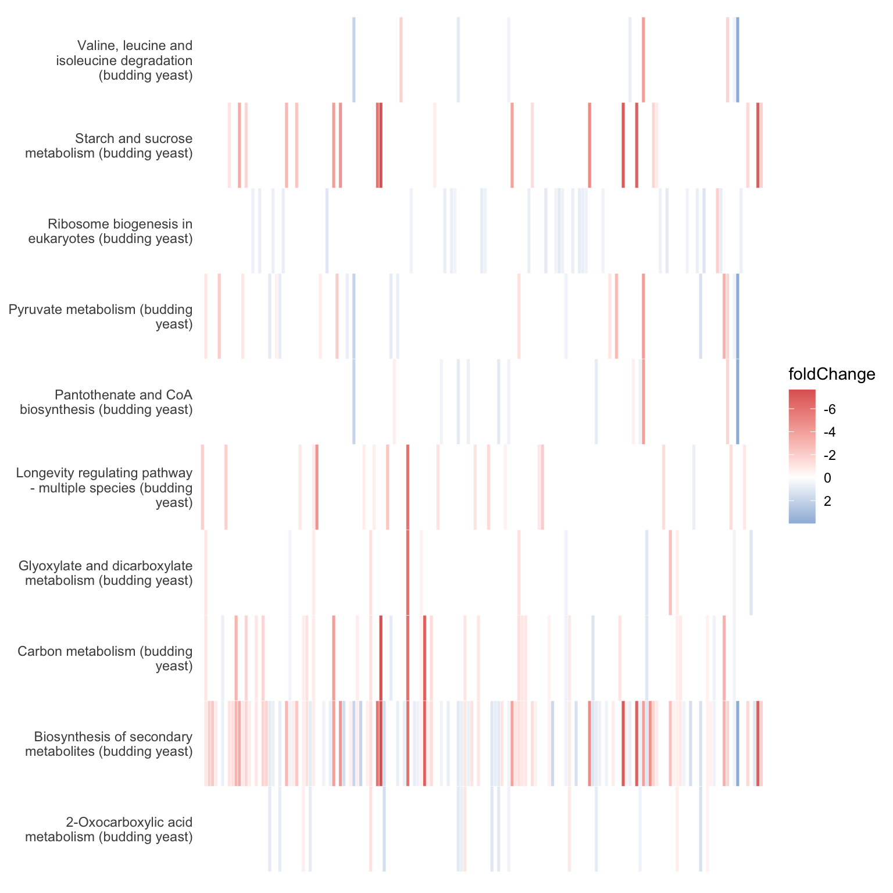
11.11 upsetplot
The upsetplot shows the the overlaps and unique contributions of KEGG pathways across multiple gene sets. It helps to identify which KEGG pathways are shared or distinct between different conditions or experimental groups, providing insights into the common and specific KEGG pathways enriched in each set of genes. Here, the bars show number of genes in the category.
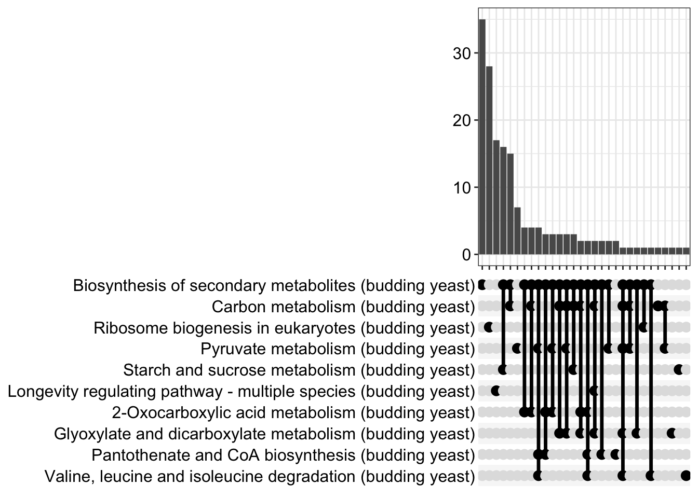
11.12 emapplot
The emmapplot enrichment map organizes enriched terms into a network with edges connecting overlapping gene sets. In this way, mutually overlapping gene sets are tend to cluster together, making it easy to identify functional modules.
The emapplot function supports results obtained from hypergeometric test and gene set enrichment analysis. We have to first use the pairwise_termsim function from the enrichplot package on the kegg_results object in order to get a similarity matrix.
x2 = enrichplot::pairwise_termsim(kegg_results)
emapplot(x2,
showCategory = 30,
cex.params = list(category_label = 0.4))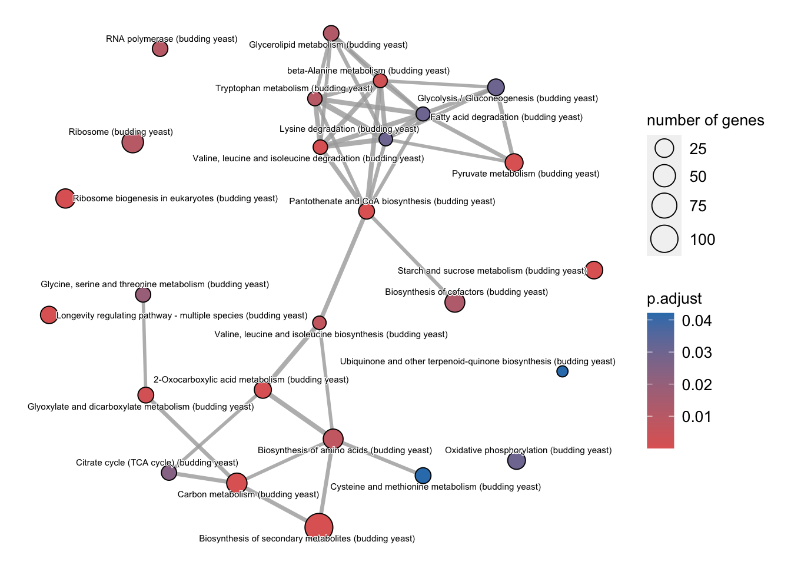
11.13 GSEA
KEGG pathway gene set enrichment analysis allows us to identify whether a particular set of genes associated with a KEGG pathway is enriched in a given gene list compared to what would be expected by chance.
# For gseKEGG, we need a gene list with na removed and sorted. let's do that now.
# omit any NA values
kegg_gene_list = na.omit(fold_change_geneList)
# sort the list in decreasing order by FOLD CHANGE (required for this analysis)
kegg_gene_list = sort(kegg_gene_list, decreasing = TRUE)
gse_kegg <- gseKEGG(geneList = kegg_gene_list,
organism = 'sce',
# minGSSize = 120,
pvalueCutoff = 0.05,
verbose = FALSE)## Warning in fgseaMultilevel(pathways = pathways, stats = stats, minSize =
## minSize, : For some pathways, in reality P-values are less than 1e-10. You can
## set the `eps` argument to zero for better estimation.## ID
## sce03010 sce03010
## sce03008 sce03008
## sce00500 sce00500
## sce03020 sce03020
## sce04213 sce04213
## sce00520 sce00520
## Description
## sce03010 Ribosome - Saccharomyces cerevisiae (budding yeast)
## sce03008 Ribosome biogenesis in eukaryotes - Saccharomyces cerevisiae (budding yeast)
## sce00500 Starch and sucrose metabolism - Saccharomyces cerevisiae (budding yeast)
## sce03020 RNA polymerase - Saccharomyces cerevisiae (budding yeast)
## sce04213 Longevity regulating pathway - multiple species - Saccharomyces cerevisiae (budding yeast)
## sce00520 Amino sugar and nucleotide sugar metabolism - Saccharomyces cerevisiae (budding yeast)
## setSize enrichmentScore NES pvalue p.adjust
## sce03010 174 0.6197685 2.654732 1.000000e-10 1.010000e-08
## sce03008 74 0.6595249 2.519163 3.984710e-10 2.012279e-08
## sce00500 39 -0.8569869 -2.240346 9.406530e-10 3.166865e-08
## sce03020 31 0.7228139 2.305050 3.938205e-06 9.943967e-05
## sce04213 38 -0.7695484 -2.008026 1.063327e-05 2.147920e-04
## sce00520 31 -0.7964672 -2.004683 1.740995e-05 2.930675e-04
## qvalue rank leading_edge
## sce03010 7.894737e-09 1481 tags=68%, list=26%, signal=52%
## sce03008 1.572912e-08 1094 tags=68%, list=19%, signal=55%
## sce00500 2.475403e-08 319 tags=49%, list=6%, signal=46%
## sce03020 7.772772e-05 1091 tags=68%, list=19%, signal=55%
## sce04213 1.678937e-04 615 tags=50%, list=11%, signal=45%
## sce00520 2.290783e-04 166 tags=29%, list=3%, signal=28%
## core_enrichment
## sce03010 YLR406C/YIL069C/YKL156W/YNL002C/YDR471W/YMR194W/YOR234C/YGR085C/YBR189W/YPL198W/YGR214W/YDL082W/YFL034C-A/YNL096C/YHL033C/YJL177W/YIL133C/YNL067W/YHL001W/YOL121C/YOR312C/YLR448W/YDR025W/YOR293W/YPL079W/YLR061W/YJL190C/YML063W/YDR447C/YGL076C/YDR500C/YLR344W/YLR048W/YER131W/YOR096W/YDR418W/YML026C/YDL083C/YNL301C/YEL054C/YBL027W/YGR148C/YDL136W/YBR181C/YER117W/YMR142C/YNL162W/YML073C/YER102W/YLR325C/YKR057W/YBR191W/YLR441C/YGR034W/YFR031C-A/YDL075W/YKR094C/YER074W/YCR003W/YHR010W/YLR009W/YPL090C/YHR141C/YGL123W/YLL045C/YER056C-A/YHR203C/YMR230W/YDR405W/YOR063W/YMR242C/YJL136C/YLR167W/YGR118W/YLR264W/YNL302C/YPR102C/YKL180W/YPR132W/YBR084C-A/YLR029C/YPL249C-A/YDR450W/YJL191W/YJR123W/YLR388W/YDL191W/YBL072C/YIL052C/YMR143W/YDR064W/YNL178W/YPL081W/YBL087C/YNL069C/YOL127W/YGL031C/YBL092W/YOL120C/YML024W/YPR043W/YJR145C/YOR182C/YDL133C-A/YLR333C/YBR048W/YFR032C-A/YLR340W/YHL004W/YPL143W/YIL018W/YLR367W/YGL030W/YDL202W/YML025C/YJR094W-A/YGL189C/YJL189W/YLR185W
## sce03008 YOR119C/YDR449C/YNL132W/YLR106C/YLL034C/YLR186W/YJL069C/YOR310C/YKL186C/YLR175W/YLR197W/YDL014W/YHR170W/YNL282W/YDL208W/YHR089C/YPL093W/YDL166C/YOR056C/YGR030C/YNL075W/YCR057C/YJL109C/YLR222C/YML093W/YHR148W/YGR128C/YOL010W/YLR129W/YLR409C/YLR022C/YHR196W/YDR339C/YPL217C/YMR239C/YBL018C/YOR048C/YDR324C/YLR397C/YGR090W/YBR167C/YEL026W/YPL043W/YNL207W/YBR257W/YDR398W/YJR002W/YGL099W/YIL035C/YNR053C
## sce00500 YBR001C/YOL157C/YKR058W/YPR026W/YCL040W/YMR261C/YPR184W/YDR074W/YDR001C/YBR126C/YKL035W/YDR516C/YEL011W/YLR258W/YFR015C/YMR105C/YPR160W/YML100W/YFR053C
## sce03020 YOR340C/YPR010C/YNL113W/YKL144C/YPR110C/YOR341W/YNL151C/YNL248C/YJL148W/YJR063W/YBR154C/YHR143W-A/YIL021W/YOR207C/YOR224C/YOR210W/YPR187W/YDL150W/YDR045C/YKR025W/YGL070C
## sce04213 YER103W/YFL033C/YDR256C/YPL203W/YDR096W/YLL024C/YJL005W/YHR008C/YMR037C/YKL062W/YNL098C/YPL015C/YJL164C/YBL075C/YAL005C/YLL026W/YGL037C/YDR258C/YGR088W
## sce00520 YML087C/YMR084W/YMR278W/YCL040W/YKL150W/YKL035W/YDR516C/YMR105C/YFR053C# shorten the gse_kegg descriptions that are too long
gse_kegg@result$Description <- gse_kegg@result$Description %>%
str_replace_all(., fixed(" - Saccharomyces cerevisiae"), "")11.13.1 gseKEGG vs enrichKEGG
What is the difference, and when to use each?
Both gseKEGG and enrichKEGG functions are used for gene set enrichment analysis (GSEA) focusing on KEGG pathways, but they have different underlying methodologies and purposes.
gseKEGG:
Methodology: Gene Set Test (GSE):
gseKEGGemploys a gene set test approach. It calculates an enrichment score for each KEGG pathway based on the distribution of genes within the pathway in the ranked list of genes (usually by their differential expression values). Permutations: The method involves permutations to assess the statistical significance of the enrichment scores.Output: The output is a
GSEAResultobject containing information about the enriched KEGG pathways, including their names, enrichment scores, and p-values.Use Case:
gseKEGGis suitable when you have a ranked list of genes based on some criteria (e.g., differential expression) and want to perform GSEA to identify KEGG pathways associated with these genes.enrichKEGG:
Methodology: Over-Representation Analysis (ORA):
enrichKEGGuses an over-representation analysis approach. It tests whether a predefined set of genes associated with a KEGG pathway is overrepresented in a given gene list compared to what would be expected by chance. Hypergeometric Test: The statistical significance is often assessed using a hypergeometric test.Output: The output is a data frame containing information about the enriched KEGG pathways, including names, p-values, and other statistics.
Use Case:
enrichKEGGis appropriate when you have a gene list and want to identify KEGG pathways that are significantly enriched in that list. It doesn’t require a ranked list of genes.
Which to Choose:
If you have a ranked list of genes (e.g., based on differential expression) and want to perform GSEA, use `gseKEGG`.
If you have a gene list and want to identify overrepresented pathways without ranking genes, use `enrichKEGG`.In summary, the choice between gseKEGG and enrichKEGG depends on your data and the analysis you want to perform. Both methods can provide insights into the functional enrichment of gene sets (KEGG pathways, in this case) in the context of different experimental conditions.
11.13.2 GSEA visualization
We can also visualize the outputs of gseKEGG using the same functions as above.
dotplot(gse_kegg, showCategory = 3, title = "Enriched Pathways" , split=".sign") + facet_grid(.~.sign)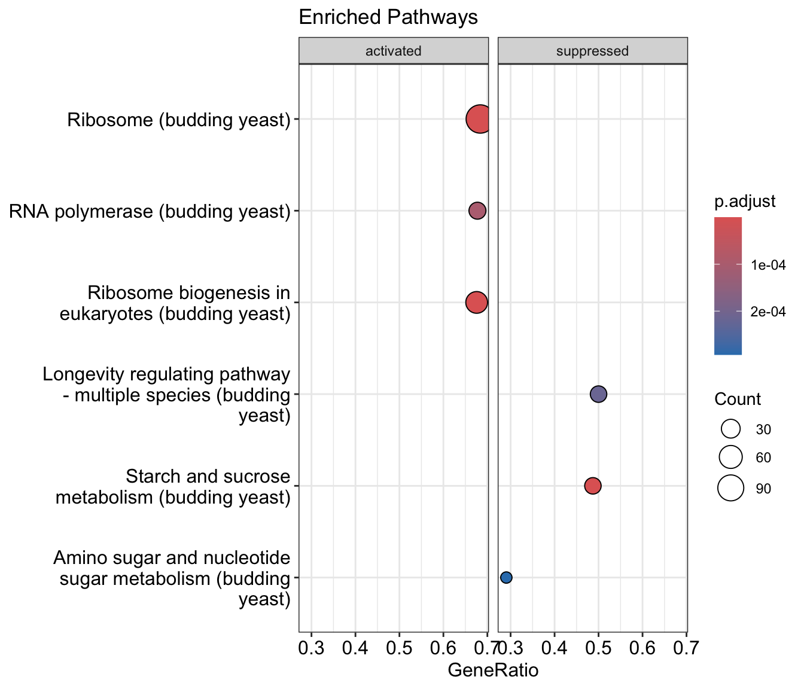
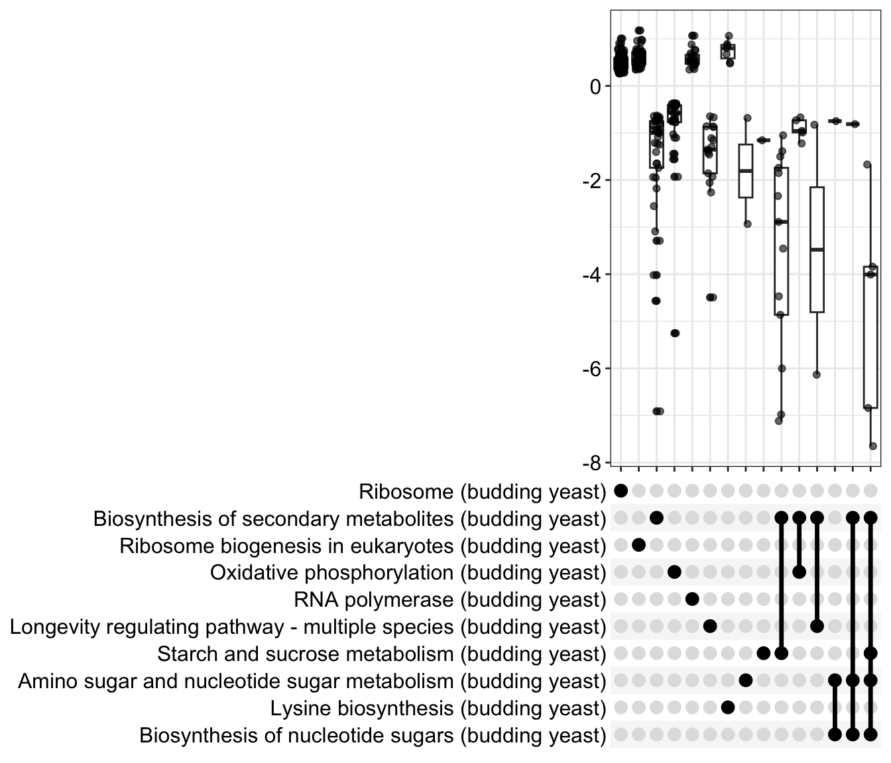
There are also visualizations specific to the gseaResult output of gseKEGG, shown below. We can see where in the rankings the genes belonging to a given KEGG group are found relative to the entire ranked list. We can change the geneSetID value to get other KEGG pathways.
# Visualize the ranking of the genes by set
gseaplot(gse_kegg, geneSetID = 1, by = "preranked", title = gse_kegg$Description[1])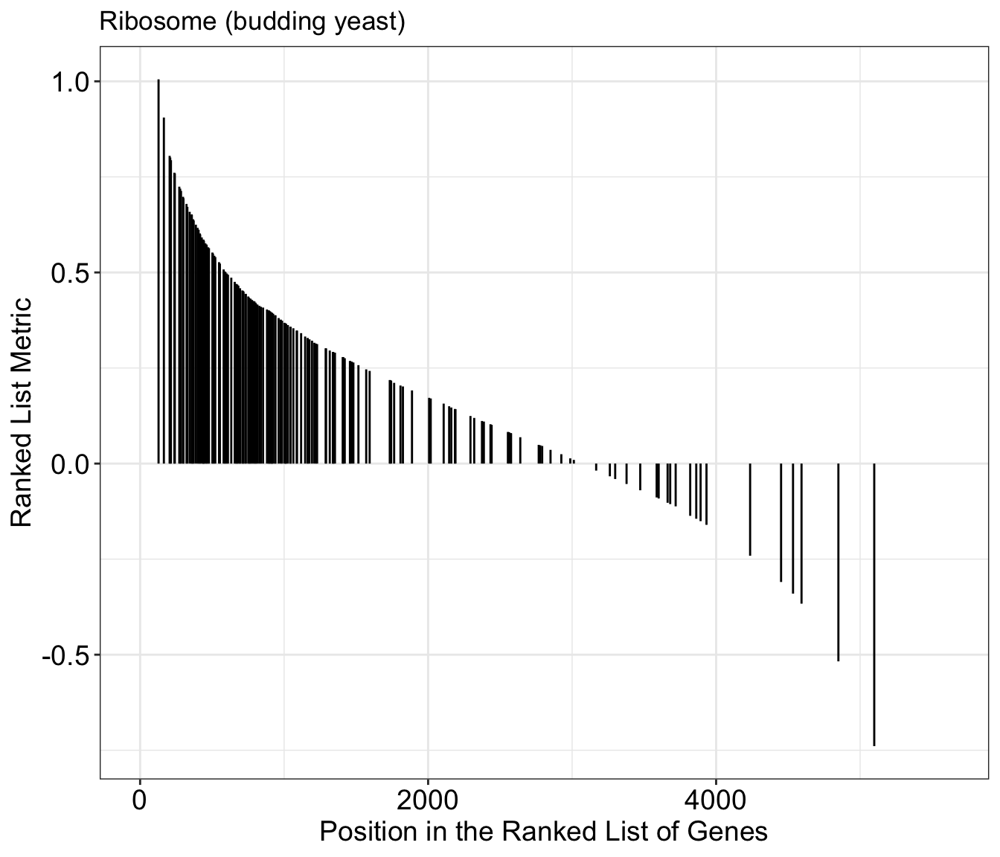
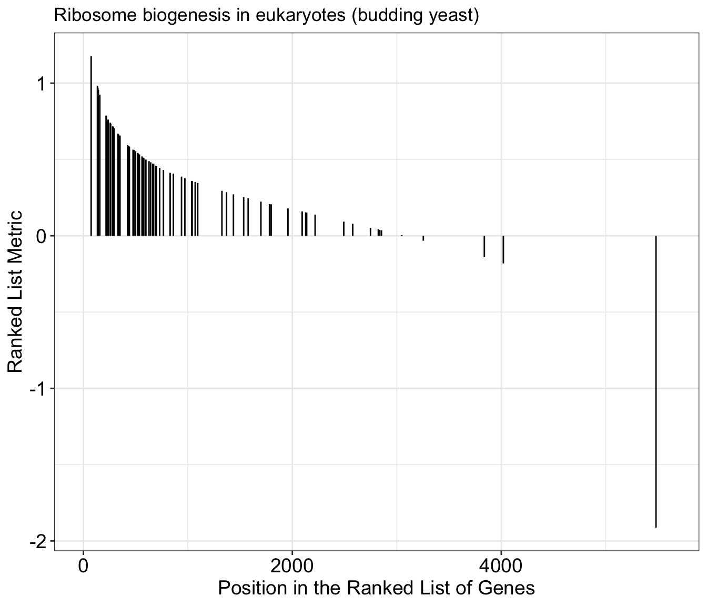
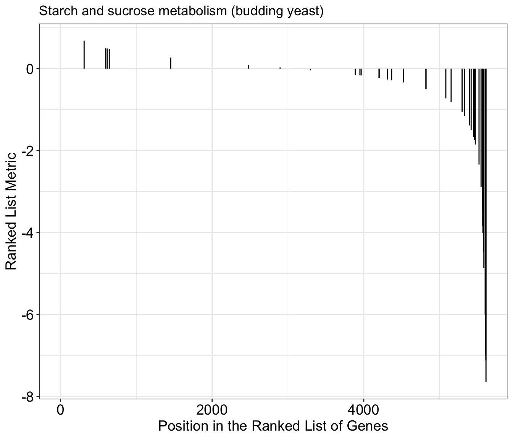
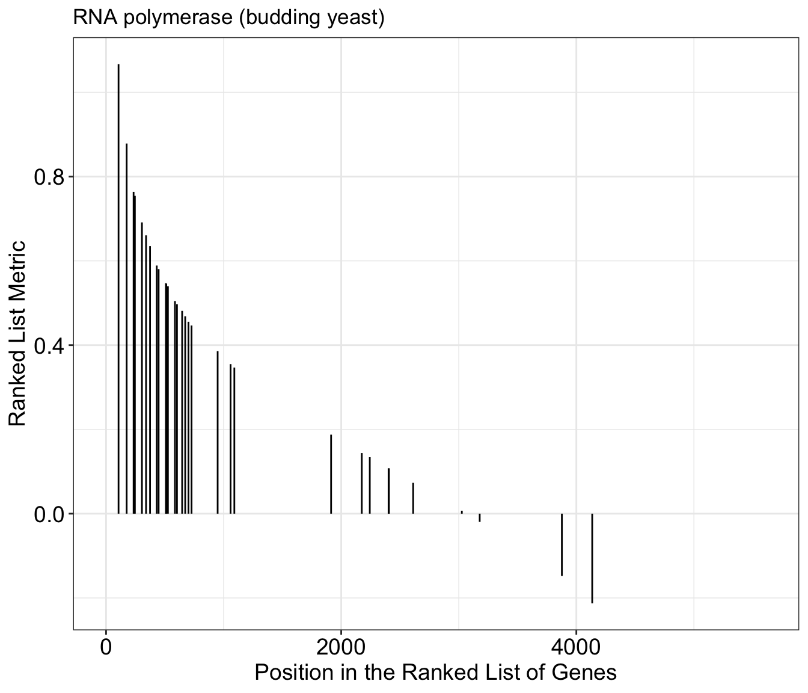
In addition to the plot above, we can create plots with more details by not included the by="preranked" argument. We can now see the calculated enrichment score across the list for this gene set.
# take a closer look at the RNA polymerase genes
gseaplot(gse_kegg, geneSetID = 4, title = gse_kegg$Description[4])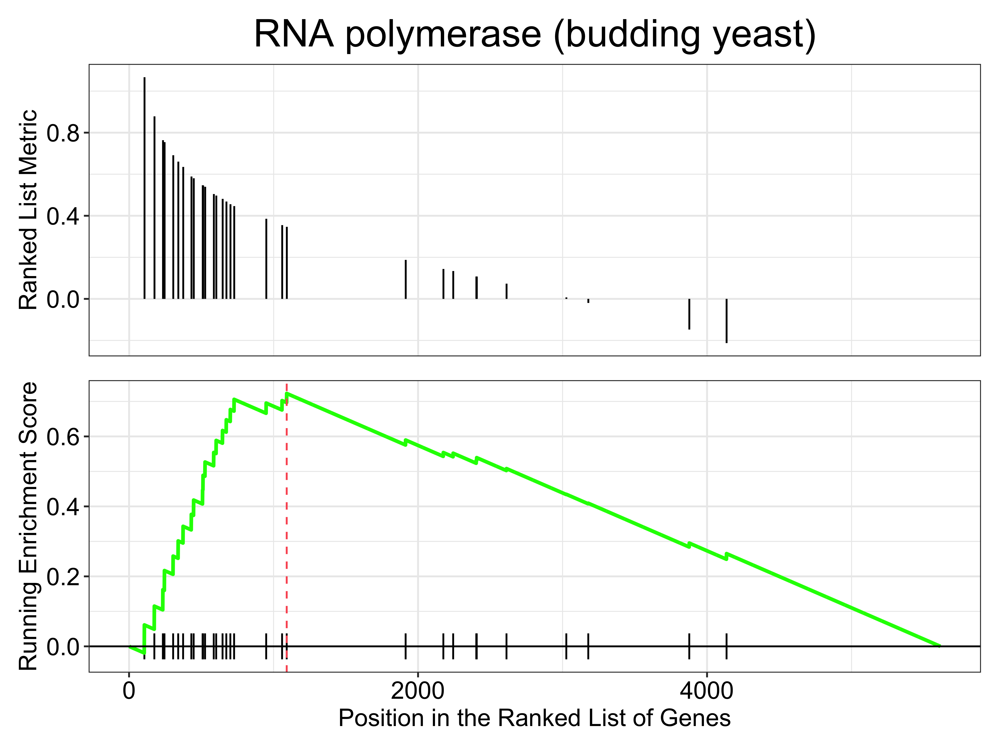
What if we want to look at multiple together KEGG pathways simultaneously? We can do that with gseaplot2 from the enrichplot package. Here we look at the first 3 KEGG pathways together.
# gseaplot2 multiple KEGG pathway enrichments
enrichplot::gseaplot2(gse_kegg, geneSetID = 1:3, pvalue_table = TRUE,
color = c("#E495A5", "#86B875", "#7DB0DD"), ES_geom = "dot")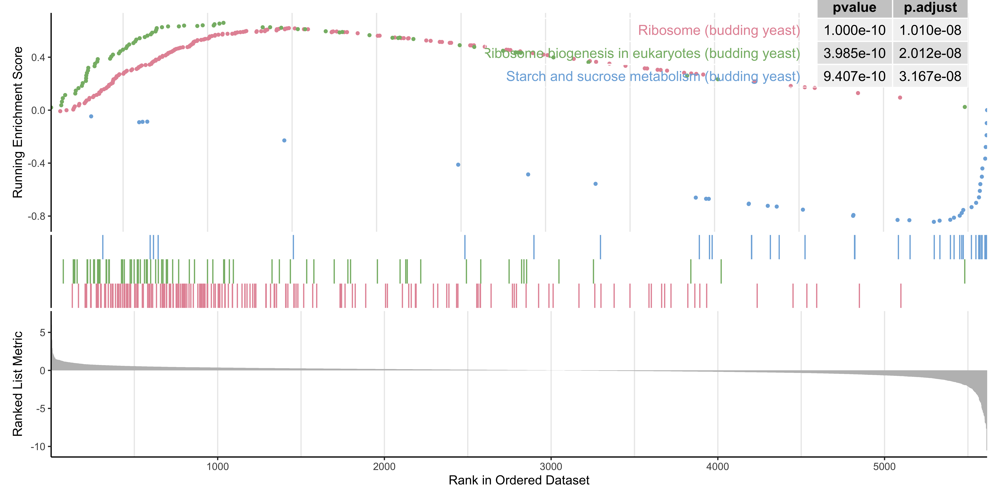
11.14 Questions
Can you explain the concept of gene set enrichment analysis and its relevance in functional genomics?
How would you interpret the results obtained from clusterProfiler, specifically focusing on enriched terms and associated p-values?
Compare and contrast KEGG enrichment with other tools or methods used for functional enrichment analysis.
Can you find the KEGG organism for the organism that you are interested in?
Be sure to knit this file into a pdf or html file once you’re finished.
System information for reproducibility:
R version 4.3.1 (2023-06-16)
Platform: aarch64-apple-darwin20 (64-bit)
locale: en_US.UTF-8||en_US.UTF-8||en_US.UTF-8||C||en_US.UTF-8||en_US.UTF-8
attached base packages: stats4, stats, graphics, grDevices, utils, datasets, methods and base
other attached packages: NbClust(v.3.0.1), factoextra(v.1.0.7), ggfx(v.1.0.1), patchwork(v.1.1.3), ggkegg(v.0.99.4), tidygraph(v.1.2.3), XML(v.3.99-0.14), ggraph(v.2.1.0), KEGGgraph(v.1.62.0), ggupset(v.0.3.0), pathview(v.1.42.0), BiocFileCache(v.2.10.0), dbplyr(v.2.3.4), DOSE(v.3.28.0), ggrepel(v.0.9.4), viridis(v.0.6.4), viridisLite(v.0.4.2), scales(v.1.2.1), Glimma(v.2.12.0), DESeq2(v.1.41.12), edgeR(v.3.99.5), limma(v.3.58.0), reactable(v.0.4.4), webshot2(v.0.1.1), statmod(v.1.5.0), Rsubread(v.2.16.0), ShortRead(v.1.60.0), GenomicAlignments(v.1.38.0), SummarizedExperiment(v.1.32.0), MatrixGenerics(v.1.14.0), matrixStats(v.1.0.0), Rsamtools(v.2.18.0), GenomicRanges(v.1.54.0), Biostrings(v.2.70.1), GenomeInfoDb(v.1.38.0), XVector(v.0.42.0), BiocParallel(v.1.36.0), Rfastp(v.1.12.0), org.Sc.sgd.db(v.3.18.0), AnnotationDbi(v.1.64.0), IRanges(v.2.36.0), S4Vectors(v.0.40.0), Biobase(v.2.62.0), BiocGenerics(v.0.48.0), clusterProfiler(v.4.10.0), ggVennDiagram(v.1.2.3), tidytree(v.0.4.5), igraph(v.1.5.1), janitor(v.2.2.0), BiocManager(v.1.30.22), pander(v.0.6.5), knitr(v.1.44), here(v.1.0.1), lubridate(v.1.9.3), forcats(v.1.0.0), stringr(v.1.5.0), dplyr(v.1.1.3), purrr(v.1.0.2), readr(v.2.1.4), tidyr(v.1.3.0), tibble(v.3.2.1), ggplot2(v.3.4.4), tidyverse(v.2.0.0) and pacman(v.0.5.1)
loaded via a namespace (and not attached): fs(v.1.6.3), bitops(v.1.0-7), enrichplot(v.1.22.0), HDO.db(v.0.99.1), httr(v.1.4.7), RColorBrewer(v.1.1-3), Rgraphviz(v.2.46.0), tools(v.4.3.1), utf8(v.1.2.4), R6(v.2.5.1), lazyeval(v.0.2.2), GetoptLong(v.1.0.5), withr(v.2.5.1), gridExtra(v.2.3), textshaping(v.0.3.7), cli(v.3.6.1), Cairo(v.1.6-1), scatterpie(v.0.2.1), labeling(v.0.4.3), sass(v.0.4.7), systemfonts(v.1.0.5), yulab.utils(v.0.1.0), gson(v.0.1.0), rstudioapi(v.0.15.0), RSQLite(v.2.3.1), generics(v.0.1.3), gridGraphics(v.0.5-1), hwriter(v.1.3.2.1), crosstalk(v.1.2.0), GO.db(v.3.18.0), Matrix(v.1.6-1.1), interp(v.1.1-4), fansi(v.1.0.5), abind(v.1.4-5), lifecycle(v.1.0.3), yaml(v.2.3.7), snakecase(v.0.11.1), qvalue(v.2.34.0), SparseArray(v.1.2.0), grid(v.4.3.1), blob(v.1.2.4), promises(v.1.2.1), crayon(v.1.5.2), lattice(v.0.22-5), cowplot(v.1.1.1), chromote(v.0.1.2), KEGGREST(v.1.42.0), magick(v.2.8.1), pillar(v.1.9.0), fgsea(v.1.28.0), rjson(v.0.2.21), codetools(v.0.2-19), fastmatch(v.1.1-4), glue(v.1.6.2), ggfun(v.0.1.3), data.table(v.1.14.8), remotes(v.2.4.2.1), vctrs(v.0.6.4), png(v.0.1-8), treeio(v.1.26.0), gtable(v.0.3.4), reactR(v.0.5.0), cachem(v.1.0.8), xfun(v.0.40), S4Arrays(v.1.2.0), mime(v.0.12), RVenn(v.1.1.0), interactiveDisplayBase(v.1.40.0), ellipsis(v.0.3.2), nlme(v.3.1-163), ggtree(v.3.10.0), bit64(v.4.0.5), filelock(v.1.0.2), rprojroot(v.2.0.3), bslib(v.0.5.1), colorspace(v.2.1-0), DBI(v.1.1.3), tidyselect(v.1.2.0), processx(v.3.8.2), bit(v.4.0.5), compiler(v.4.3.1), curl(v.5.1.0), graph(v.1.80.0), DelayedArray(v.0.28.0), bookdown(v.0.36), shadowtext(v.0.1.2), rappdirs(v.0.3.3), digest(v.0.6.33), rmarkdown(v.2.25), htmltools(v.0.5.6.1), pkgconfig(v.2.0.3), jpeg(v.0.1-10), fastmap(v.1.1.1), rlang(v.1.1.1), GlobalOptions(v.0.1.2), htmlwidgets(v.1.6.2), shiny(v.1.7.5.1), farver(v.2.1.1), jquerylib(v.0.1.4), jsonlite(v.1.8.7), GOSemSim(v.2.28.0), RCurl(v.1.98-1.12), magrittr(v.2.0.3), GenomeInfoDbData(v.1.2.11), ggplotify(v.0.1.2), munsell(v.0.5.0), Rcpp(v.1.0.11), ggnewscale(v.0.4.9), ape(v.5.7-1), stringi(v.1.7.12), zlibbioc(v.1.48.0), MASS(v.7.3-60), AnnotationHub(v.3.10.0), plyr(v.1.8.9), org.Hs.eg.db(v.3.18.0), parallel(v.4.3.1), HPO.db(v.0.99.2), deldir(v.1.0-9), graphlayouts(v.1.0.1), splines(v.4.3.1), hms(v.1.1.3), locfit(v.1.5-9.8), ps(v.1.7.5), reshape2(v.1.4.4), BiocVersion(v.3.18.0), evaluate(v.0.22), latticeExtra(v.0.6-30), tzdb(v.0.4.0), tweenr(v.2.0.2), httpuv(v.1.6.12), polyclip(v.1.10-6), ggforce(v.0.4.1), xtable(v.1.8-4), MPO.db(v.0.99.7), later(v.1.3.1), ragg(v.1.2.6), websocket(v.1.4.1), aplot(v.0.2.2), memoise(v.2.0.1) and timechange(v.0.2.0)